Contact Information
Dr. Coleman Krawczyk
coleman.krawczyk@port.ac.uk
Tel: +44 (0)23 9284 5150
Office: Dennis Sciama Building Room 3.08

Dr. Coleman Krawczyk
coleman.krawczyk@port.ac.uk
Tel: +44 (0)23 9284 5150
Office: Dennis Sciama Building Room 3.08
Please join us for the first talk of the Zooniverse seminar series on Wednesday 25th Feb. from 2:30pm-3:30pm in Portland 1.66.
Victoria Hyning from the Oxford Zooniverse team will be telling us about Humanities research at the Zooniverse: How to deploy crowdsourcing in the humanities.
What is the Zooniverse?
- A collection of citizen research projects designed to involve the public in academic research.
- Anybody with an internet connection can log in and start classifying real data
- While machine learning and other automated codes can classify large amounts of data, they are not adequate replacements for human abilities.
- After all, our brains have evolved to be extremely good at pattern recognition.
The Zooniverse is looking for new projects and you can help!
- Do you have a large amount of data that needs human classification?
- Do you want to increase public awareness for your research in an interactive way?
What the Zooniverse provides:
- The ability to cope with extremely large data sets – in its first six months Galaxy Zoo provided the same number of classifications as would a graduate student working round the clock for 3.5 years.
- Unlike work by a small number of experts, our ability to gather multiple independent interactions with the data provides quantitative estimates of error. This is an essential part of the ‘wisdom of crowds’, allowing us to understand the accuracy of the data we provide.
- Citizen research data sets naturally provide large and powerful training sets for machine learning approaches to classification problems. This is an essential part of our future; as data sets continue to grow we will need to hand off more and more of the routine tasks to machines; by doing citizen research today we can help train them.
- Serendipitous discovery is a natural consequence of exposing data to large numbers of users, and is something that is very difficult to program into automatic routines. Humans are naturally programmed to keep an eye out for the weird and the odd, even while sorting most objects into more mundane categories.
- While the primary goal of our projects is to produce academic research, by their very nature they are also outreach projects. As it involves our volunteers directly in the process of research, citizen reserch is a powerful tool for both formal and informal education. Unlike traditional education programs, from the moment users first interact with one of our project, they are not only learning but also contributing to reserch.
Portsmouth's link to the Zooniverse
- Since the begining, staff members from the Univeristy of Portsmouth have been on Galaxy Zoo science team
- As of October 1st 2014 the University of Portsmouth is an institutional parter of the Citzen Science Alliance (CSA), the governing body for the Zooniverse.
Services we provide:
- Help preparing and submitting Zooniverse proposals to the Citizen Science Alliance (CSA)
- A data analysis toolbox to help visualize and analyze the results of citizens interacting with your data, allowing you to more quickly answer your research questions
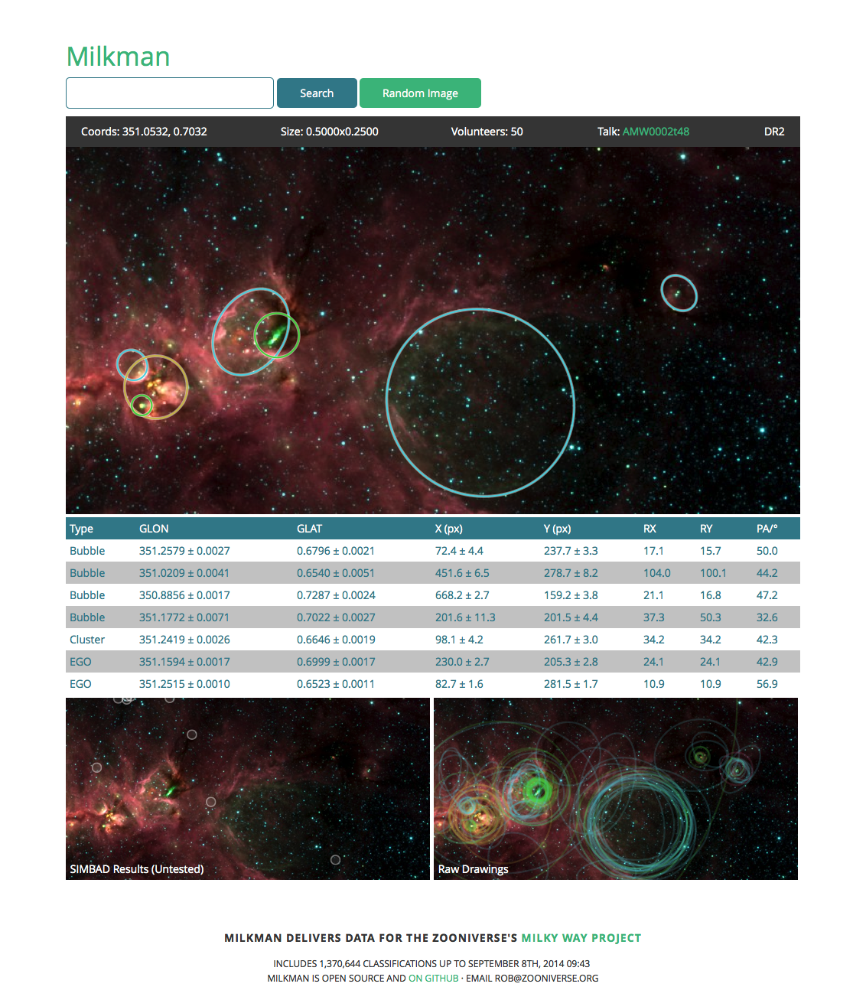
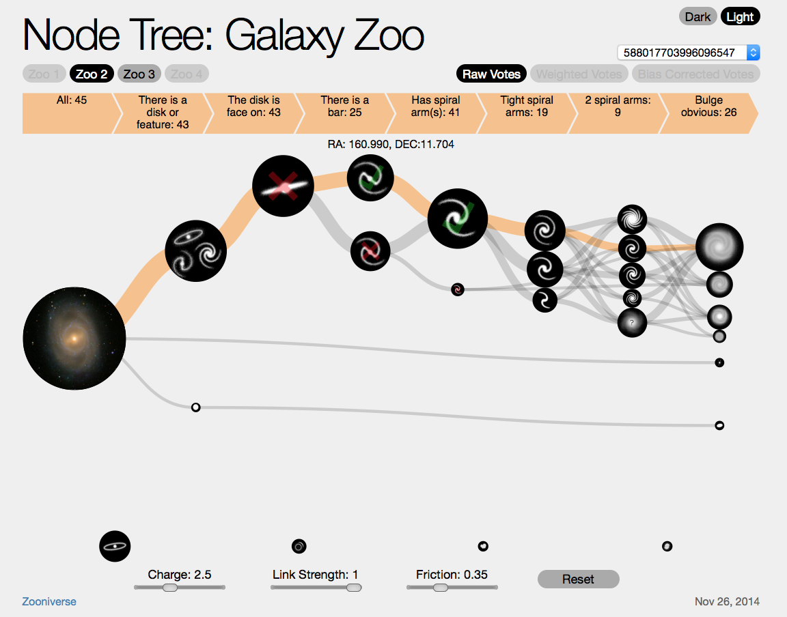
What you need to get started:
- Data in need of analysis
- An idea for the tasks you would like citizens to perform. For example:
- A clear research goal for the analysis
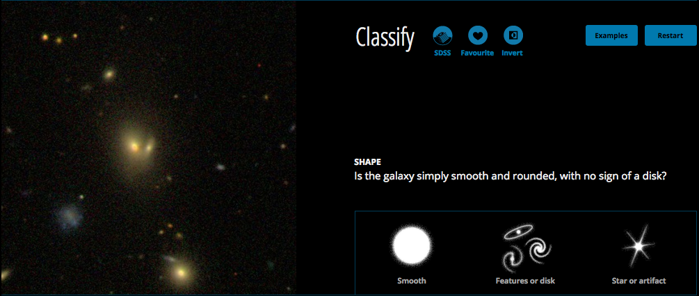
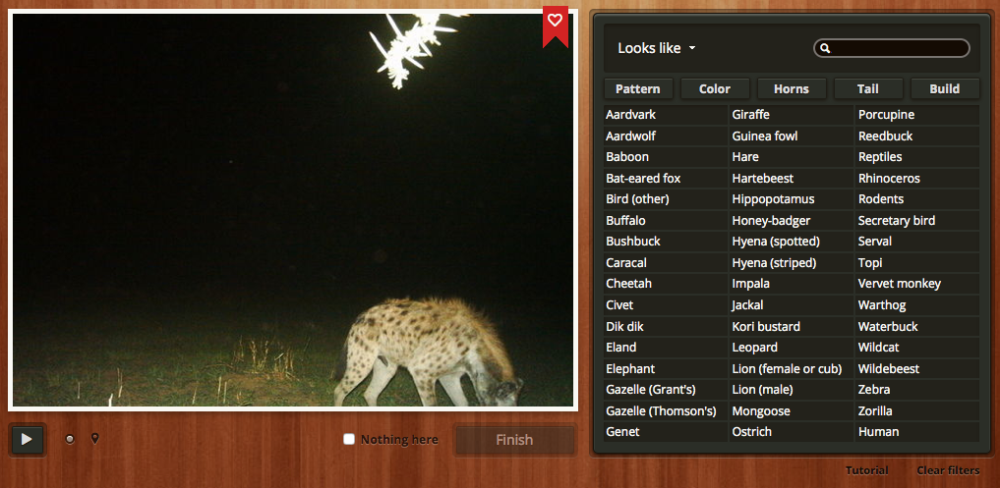
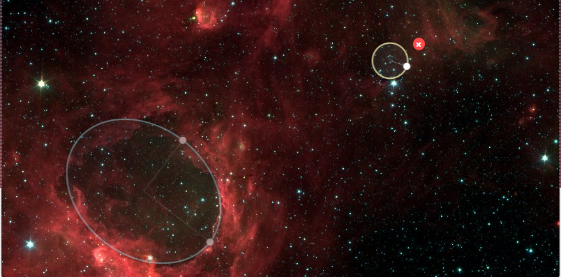
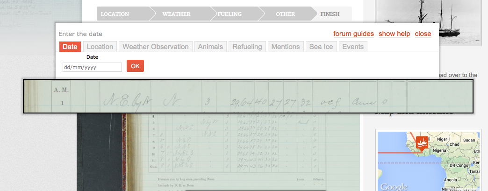
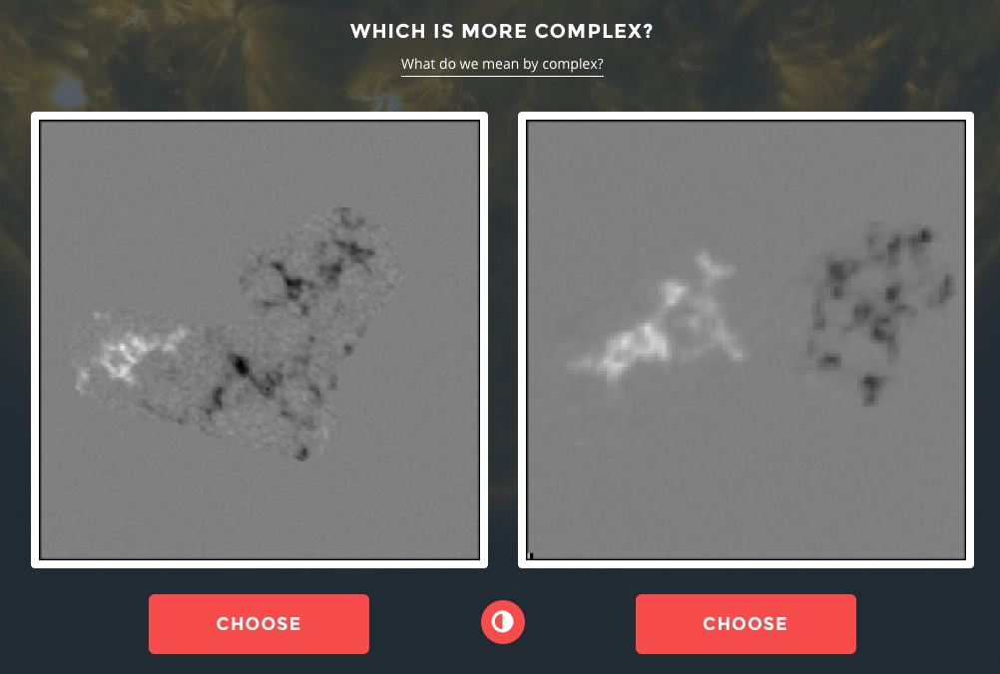
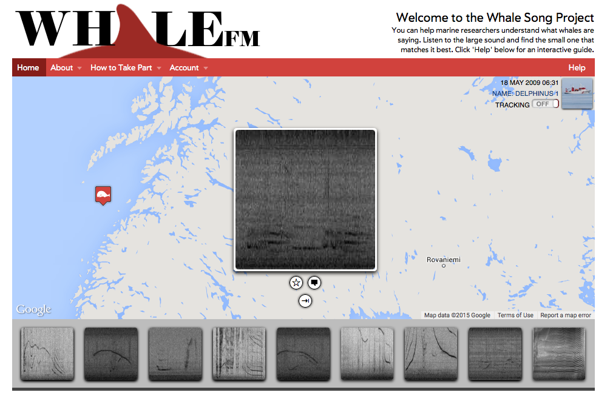
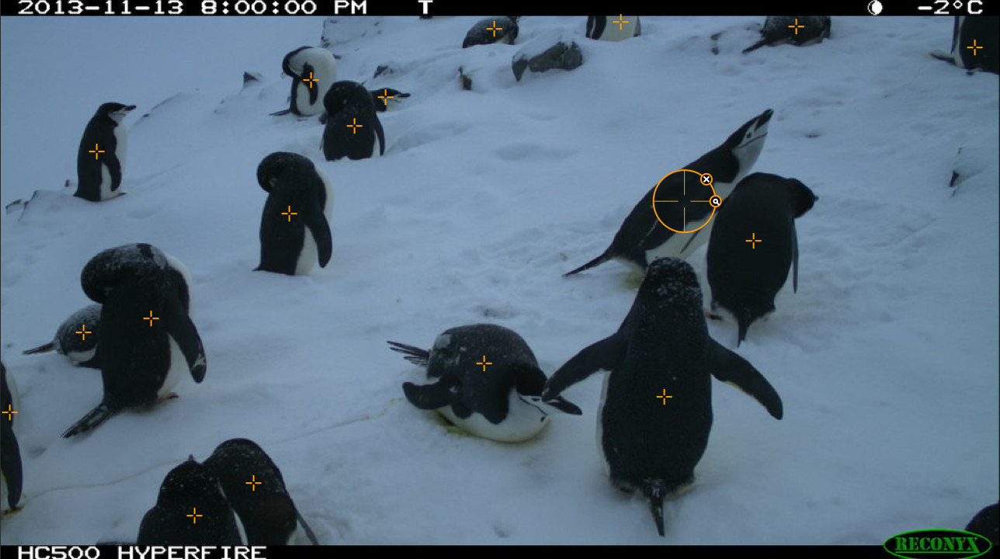
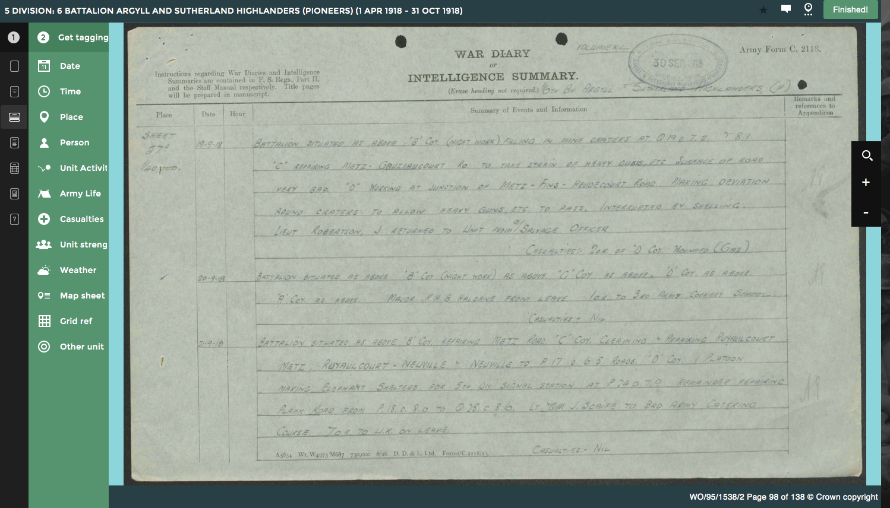
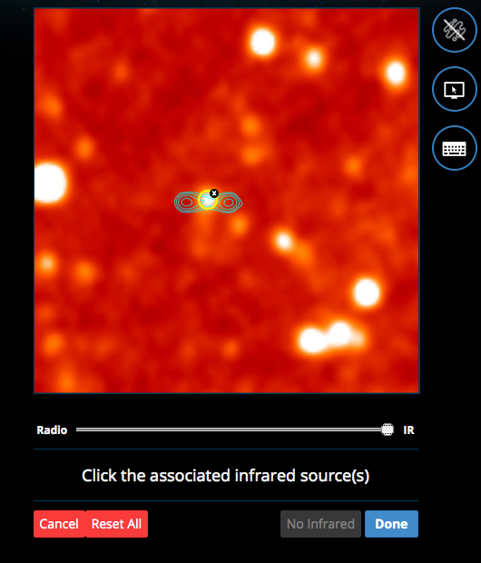
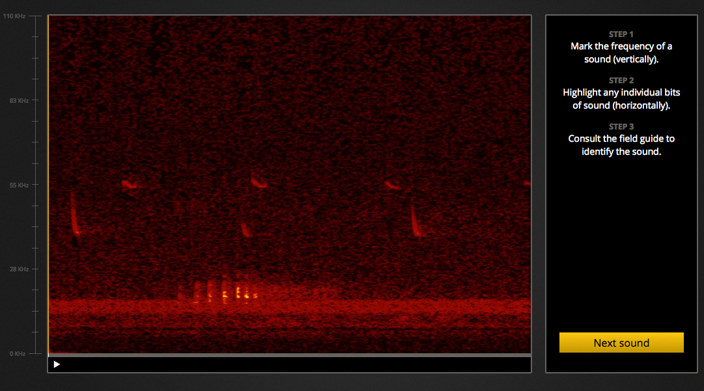